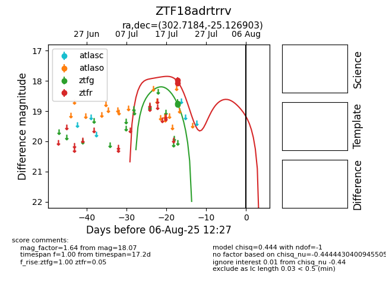

Target ZTF18adrtrrv at 2025-08-06 17:07, see:
FINK: fink-portal.org/ZTF18adrtrrv
Lasair: lasair-ztf.lsst.ac.uk/objects/ZTF18adrtrrv
ALeRCE: alerce.online/object/ZTF18adrtrrv
alt names
ZTF18adrtrrv (ztf,fink)
coordinates:
equatorial (ra, dec) = (302.7184,-25.12690)
galactic (l, b) = (17.3371,-27.86215)
photometry
last ztfg=18.74, ztfr=18.07
2 ztfg, 2 ztfr detections
